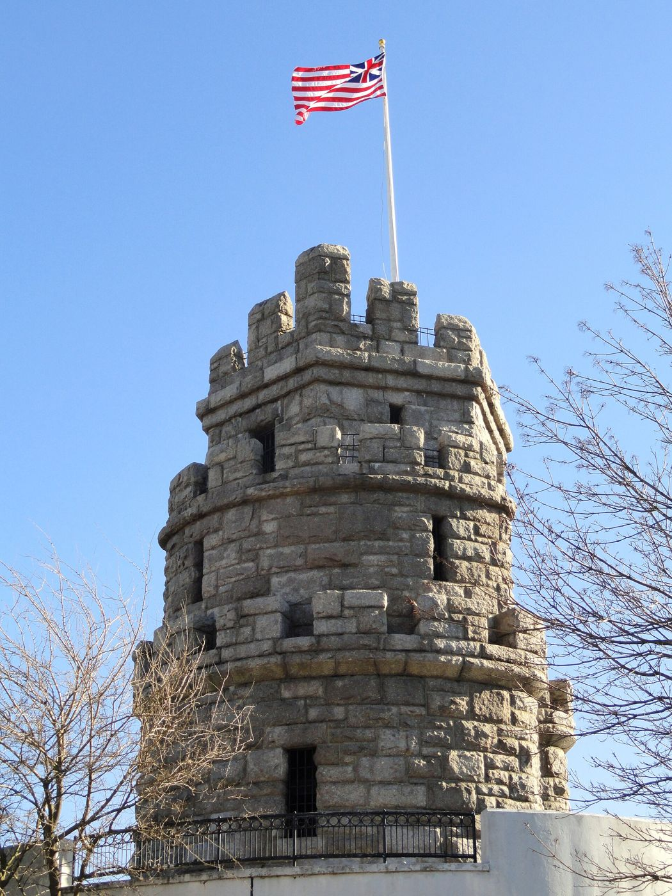
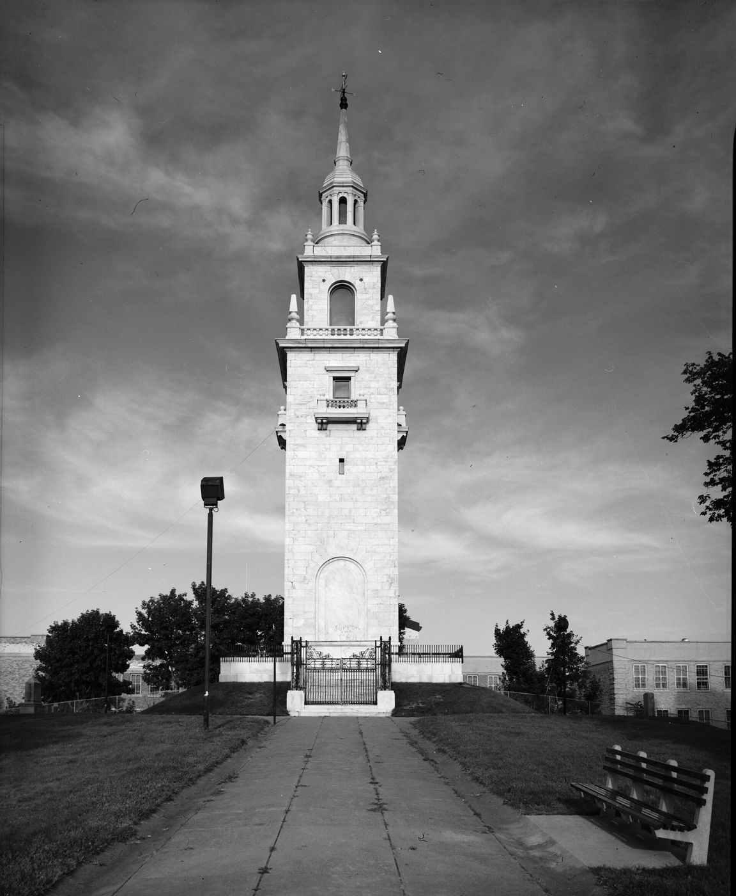
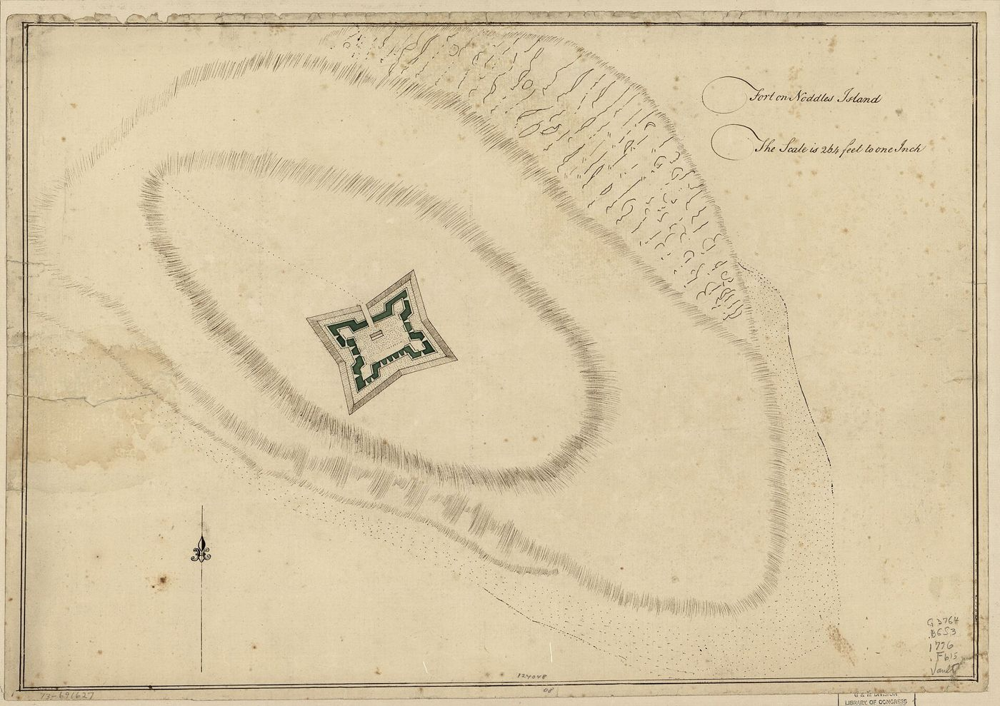
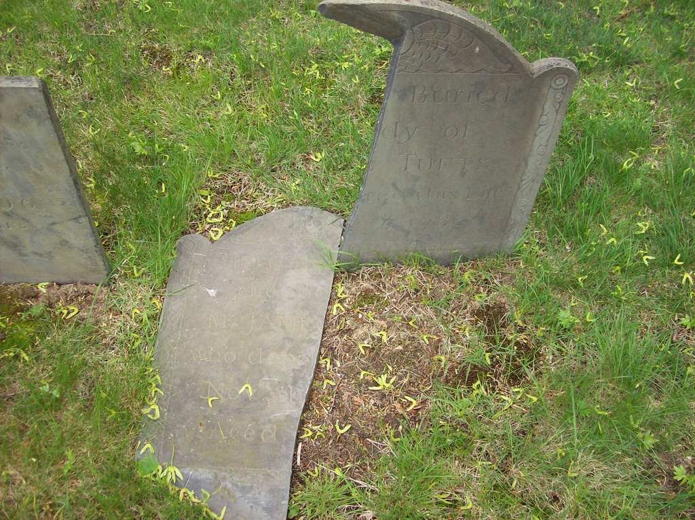

Biography
A Medford farmer, James Tufts Jr. is credited with some of the town’s earliest acts of resistance, fetching gunsmith’s tools from Charlestown in March 1775.
Service Record
Town: Medford · Dates: 1726 – 1786
Born 15 Jan. 1726 in Medford; died 5 Nov. 1786; farmer. (Tufts Kinsmen, Vol. I, p. 152, family no. 36-2)
Described as “undoubtedly the earliest Medford man to defend acknowledged liberties in March 1775,” citing the Benjamin Hall ledger: “Paid James Tufts for going to Charlestown twice for gunsmith’s tools.” (Tufts Kinsmen, Vol. I, p. 152, family no. 36-2)
Assembled on Prospect Hill (now Somerville); marched to Dorchester Heights and Noddle’s Island. (Tufts Kinsmen, Vol. I, p. 152, family no. 36-2)
Family Connection
Family number 36-2 in Tufts Kinsmen, Vol. I. Parents are not named in the extract seen.
Spouse(s)
Not found in the sources checked (Brooks 1855 Register of Families; Wild; Find a Grave data on file; Tufts Kinsmen Vol. I extract).
Authoritative IDs / Index Numbers
| Source | ID / status |
|---|---|
| Perseus person index (auth=) | auth=tufts,james. This is a name-level key shared by every James Tufts in Perseus, not a personal ID. Use it with the passages cited on this page. |
| Find a Grave memorial | 26920544 (dates and family checked) |
| Brooks, History of Medford (1855) register no. | Checked, no entry confidently matched |
| Tufts Kinsmen, Vol. I family no. | 36-2 |
| Mass. Soldiers and Sailors | Not yet checked for this page |
| DAR ancestor no. | Note: Pending further work. |
| FamilySearch ID | Note: Pending further work. |
| Geni profile | Note: Pending further work. |
| WikiTree ID | Note: Pending further work. |
| Town / vital records | Medford VRs not yet checked by volume and page |
Only IDs confirmed against dates and family are given as matches. “Not yet checked” means the source has not been searched; “Checked, not found” means it was searched without a match.
⚑ Unverified
Possible match to “Tufts James Jr.” on the Medford 1925 Minute Men monument; not confirmed. No other source on this site has yet been checked for this man.
Pictures





_-_general_view.jpg){kind=link}



Find a Grave
Find a Grave memorial 26920544. As given there (secondary; not checked against original records): Born 15 Jan 1726, Medford; died 5 Nov 1786, aged 60. Salem Street Burying Ground, plot 104.


Medford Roll of April 19, 1775
Listed as “James Tufts, Jr.” on the Medford roll of Capt. Isaac Hall’s company called in “The Route of Revere” (Medford Historical Register, vol. XXIII, no. 1 (March 1920), “The Route of Revere,” pp. 21–22. Internet Archive). See Places.
Links and Resources
Every source, record, map, survey, marker and artifact tied to this person, gathered in one place. Page numbers are given where a book is cited.
Maps, Surveys and Artifacts
- — Prospect Hill Monument, Somerville, Mass.. The monument in Prospect Hill Park, Somerville, on the hill where American troops gathered and fortified in 1775. Photographed in 2012. Tufts association: Se
- Source: Wikimedia Commons — …on the hill where American troops gathered and fortified in 1775. Photographed in 2012. Tufts association: Service of James Tufts Jr. (36-2) and John Tufts (49-2); see their profiles for the cited records.Image: Daderot. CC0.
- — …troops gathered and fortified in 1775. Photographed in 2012. Tufts association: Service of James Tufts Jr. (36-2) and John Tufts (49-2); see their profiles for the cited records.Image: Daderot. CC0. Source: Wikimedia Commons
- Source: Wikimedia Commons — …Tufts association: Family tradition places Peter Tufts (b. 1753) in the party that fortified the Heights; Booth p. 22 gives it as “It is related.” Unverified.Image: Jet Lowe (HABS/HAER, Library of Congress). Public domain.
- — …Family tradition places Peter Tufts (b. 1753) in the party that fortified the Heights; Booth p. 22 gives it as “It is related.” Unverified.Image: Jet Lowe (HABS/HAER, Library of Congress). Public domain. Source: Wikimedia Commons
- Source: Wikimedia Commons — …East Boston), from the Library of Congress. Tufts association: Service of James Tufts Jr. (36-2) and Ebenezer Tufts (36-7); see their profiles for the cited records.Image: Unknown draftsman (Library of Congress). Public domain.
- — Stones at the grave of James Tufts, Salem Street Burying Ground, Medford. Two stones, one partly legible (“Tufts”). Photo: BobBoston, Find a Grave
Graves and Memorials
- Find a Grave memorial · 26920544
Markers, Plaques and Places
- Places — Listed as “James Tufts, Jr.” on the Medford roll of Capt. Isaac Hall’s company called in “The Route of Revere” (Medford Historical Register, vol. XXIII, no. 1 (March 1920), “The Route of Revere,” pp. 21–22. Internet Archive).
Digitized Books and Journals
- Listed as “James Tufts, Jr.” on the Medford roll of Capt. Isaac Hall’s company called in “The Route of Revere” (Medford Historical Register, vol. XXIII, no. 1 (March 1920), “The Route of Revere,” pp. 21–22. · Internet Archive